JOGO: "MARCELINHO CATA OVOS".
DESCRIÇÃO:
O jogo "Marcelinho Cata Ovos" foi um projeto realizado no curso de programação web. O objetivo principal era construir um jogo utilizando orientação a objeto. Sua jogabilidade é bem simples, trata-se de um endless runner, onde o personagem principal deve fugir das galinhas raivosas enquanto desvia de obstaculos. O jogo não possui final, porém quanto maior a distancia percorrida por Marcelo sem ser pego pelas galinhas dará uma pontuação maior.
ILUSTRAÇÕES REALIZADAS:
 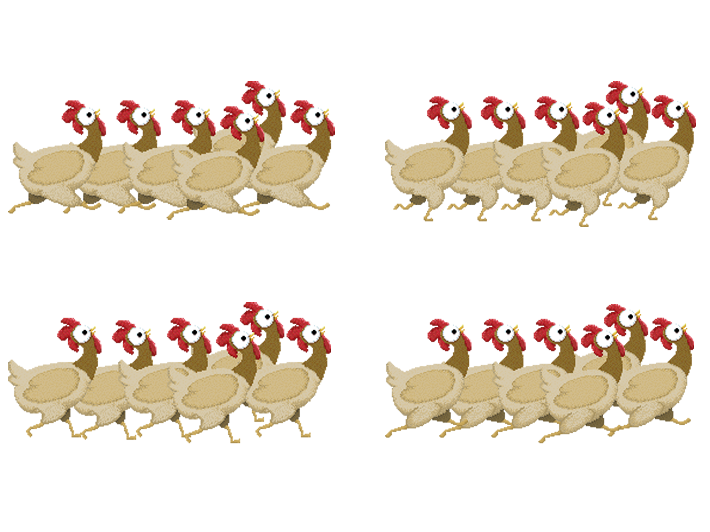
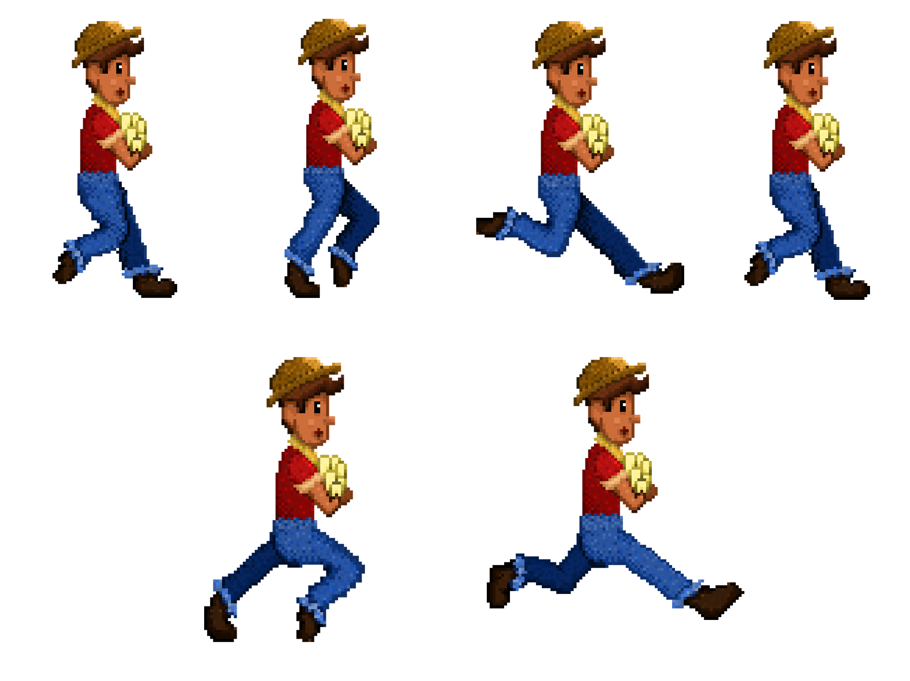
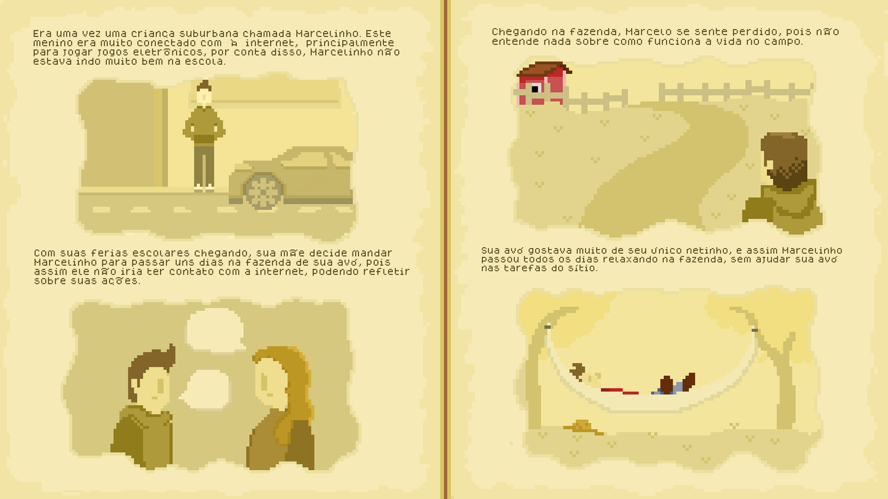
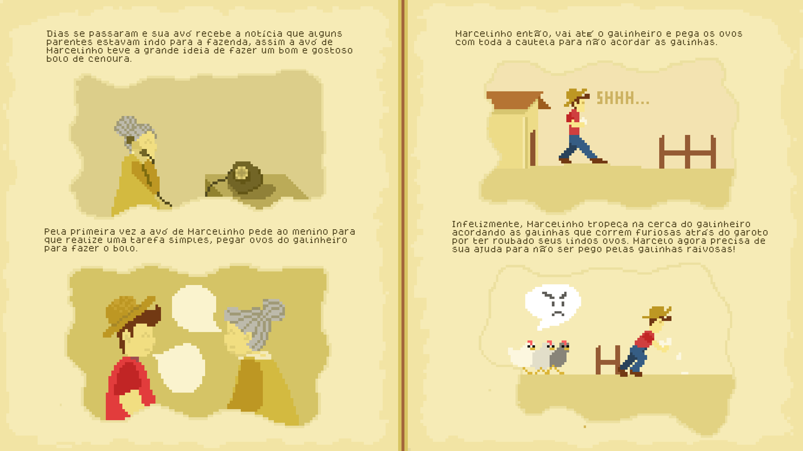
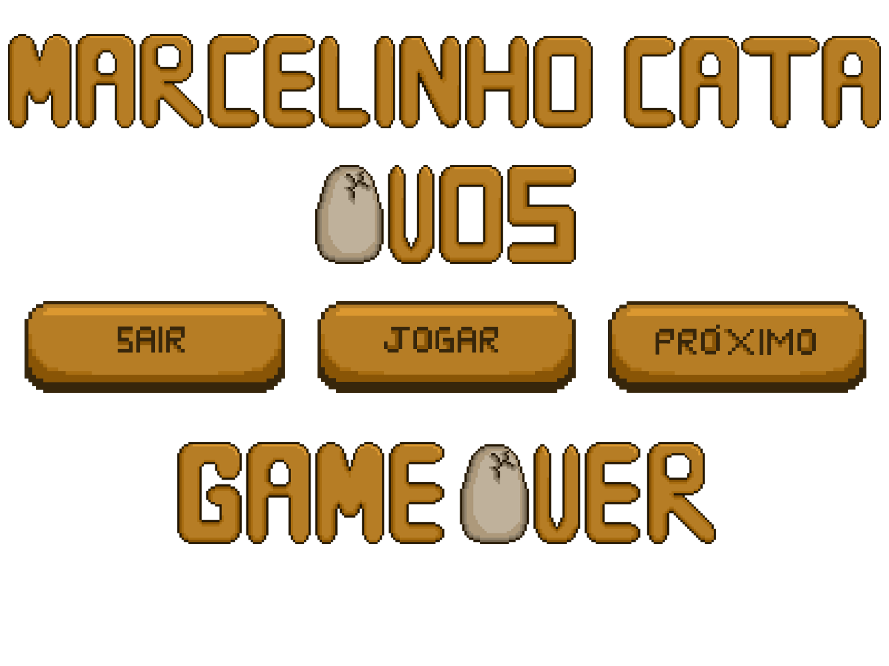
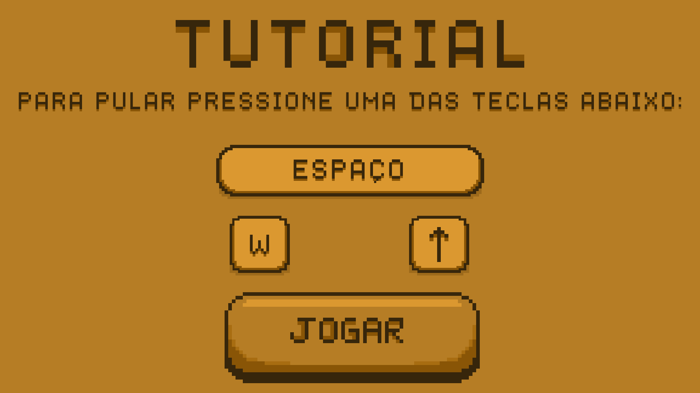
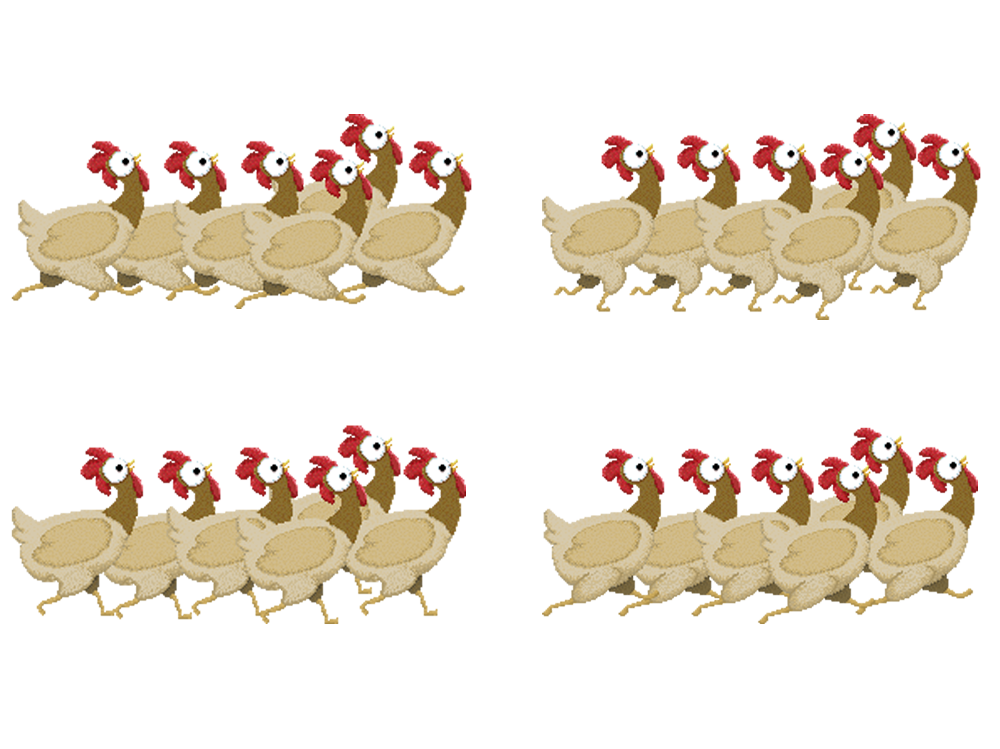
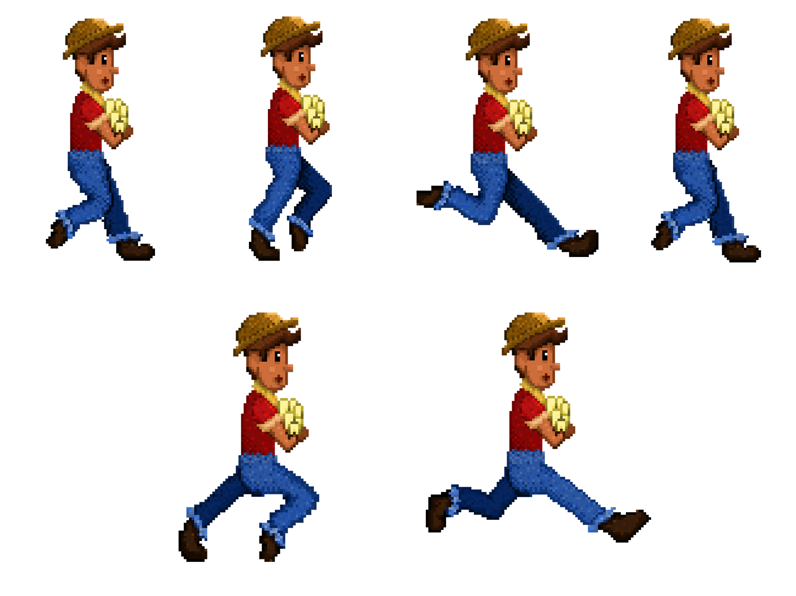
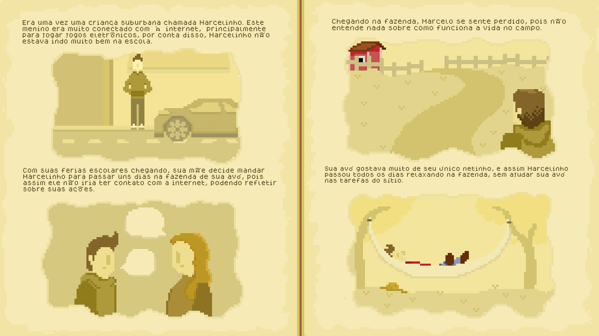
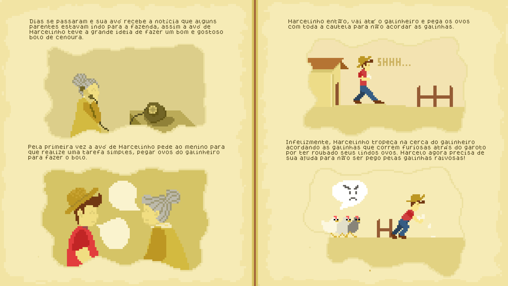
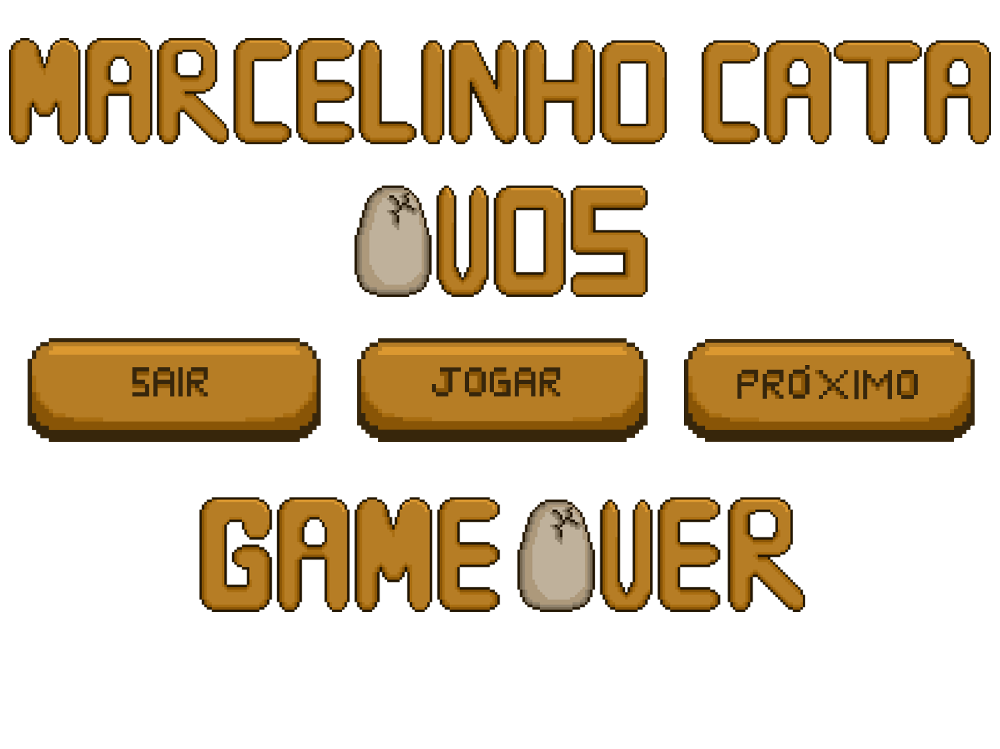
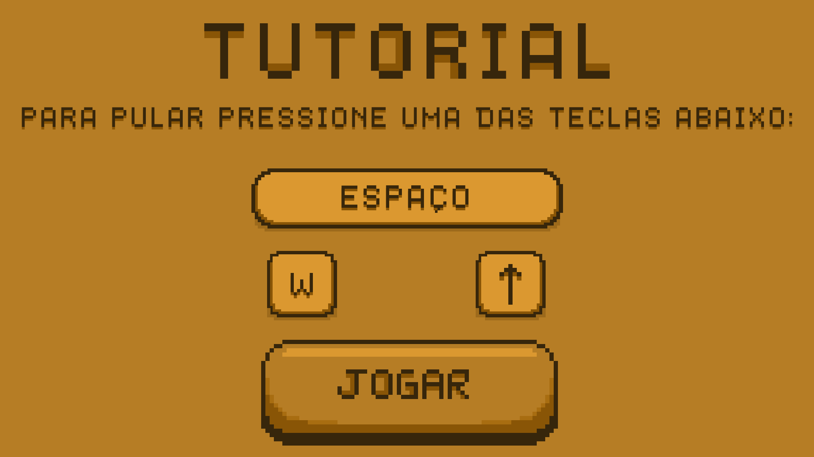